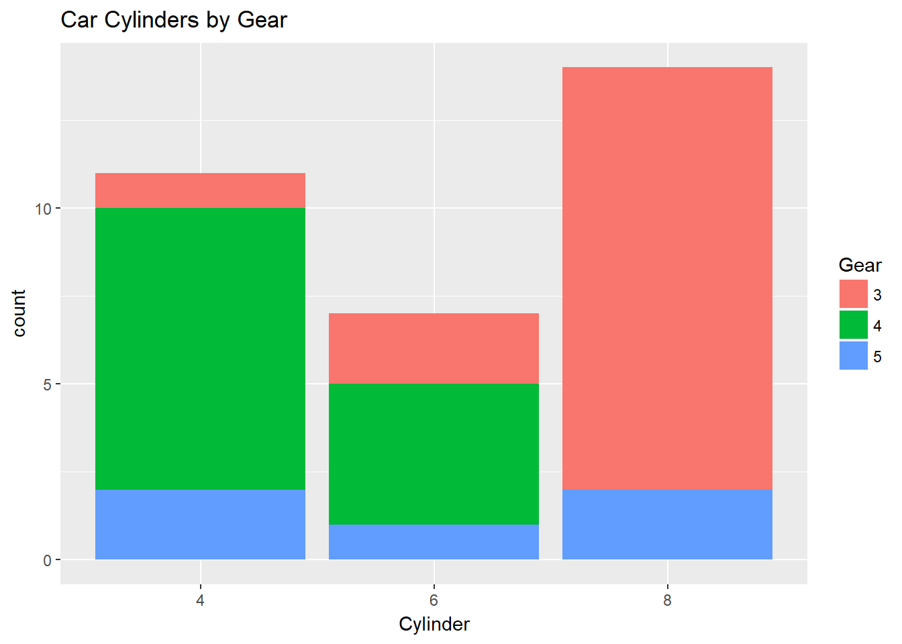
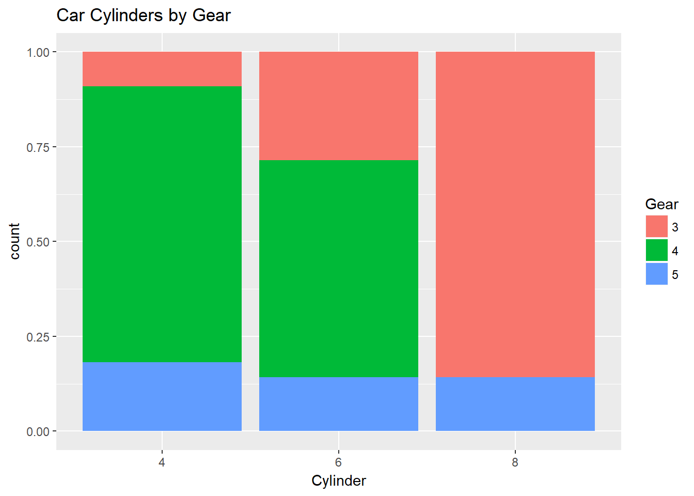
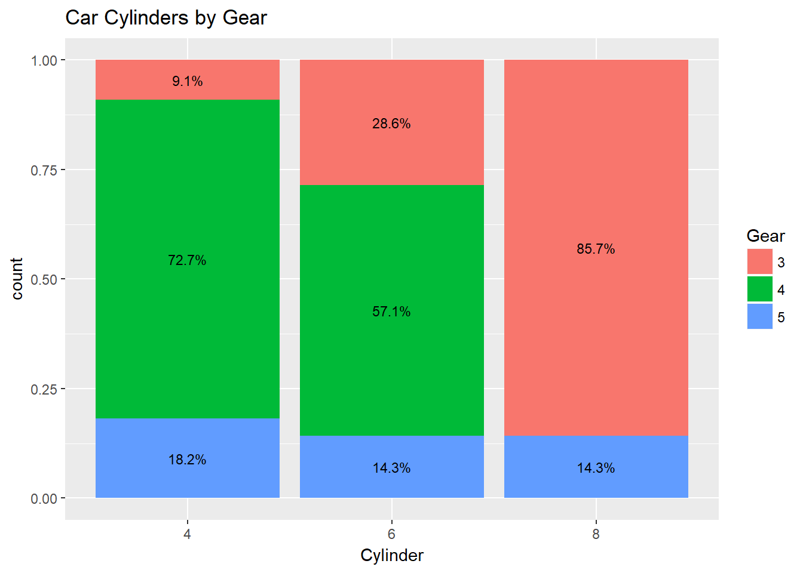

In educational data analysis, I am constantly looking at counts and proportions. I’ve found the easiest way to display these results with categorical variables like demographics is to use stacked bar charts and especially 100% stacked charts.
I am using much of what is discussed here out of the context of ggplotAssist.
ggplot2
First, for this post, I am using the following packages and mtcars as a dataset. I always make sure my dataframes are tibbles (probably not necessary).
Simple stacked bar with labelling
The first step is just to create the plot like so:
mtcars %>%
ggplot(aes(x = factor(cyl), fill = factor(gear))) +
geom_bar(position = "stack") +
labs(
title = "Car Cylinders by Gear",
x = "Cylinder",
fill = "Gear"
)
This is simple enough. x is cylinders, fill is gears, and we are stacking in geom_bar. What if I wanted to label the counts? Below is the same code, with a geom_text line.
mtcars %>%
ggplot(aes(x = factor(cyl), fill = factor(gear))) +
geom_bar(position = "stack") +
geom_text(aes(label = ..count..), stat = "count", position = position_stack(0.5), size = 3) + #add this line here
labs(
title = "Car Cylinders by Gear",
x = "Cylinder",
fill = "Gear"
)The geom_text line is counting the gears within cylinders for us and then the position_stack(0.5) is putting it half-way in each fill. Nice!
100% stacked bar
The only difference here initially, before we label, is just changing position = "stack" to position = "fill".
mtcars %>%
ggplot(aes(x = factor(cyl), fill = factor(gear))) +
geom_bar(position = "fill") + #changed to "fill"
labs(
title = "Car Cylinders by Gear",
x = "Cylinder",
fill = "Gear"
)
Easy enough. Now comes the tricky part: how do we get the percentages in there as labels? There may be a long, nasty way to do it all within geom_text, but I’ve found just making a dataframe first of your counts and ratios, and then calling that within geom_text to be easiest.
Here’s my dataframe with counts and ratios:
percentData <- mtcars %>%
group_by(cyl) %>%
count(gear) %>%
mutate(ratio = scales::percent(n/sum(n)))Then just call it, and again position it half-way in each fill:
mtcars %>%
ggplot(aes(x = factor(cyl), fill = factor(gear))) +
geom_bar(position = "fill") +
geom_text(data = percentData, aes(y = n, label = ratio), position = position_fill(vjust = 0.5), size = 3) + #call percentData. Also, I reduced the text size a little.
labs(
title = "Car Cylinders by Gear",
x = "Cylinder",
fill = "Gear"
)
That’s it! Gears with 8 cylinder vehicles have only 3 gears. Hope this is helpful!